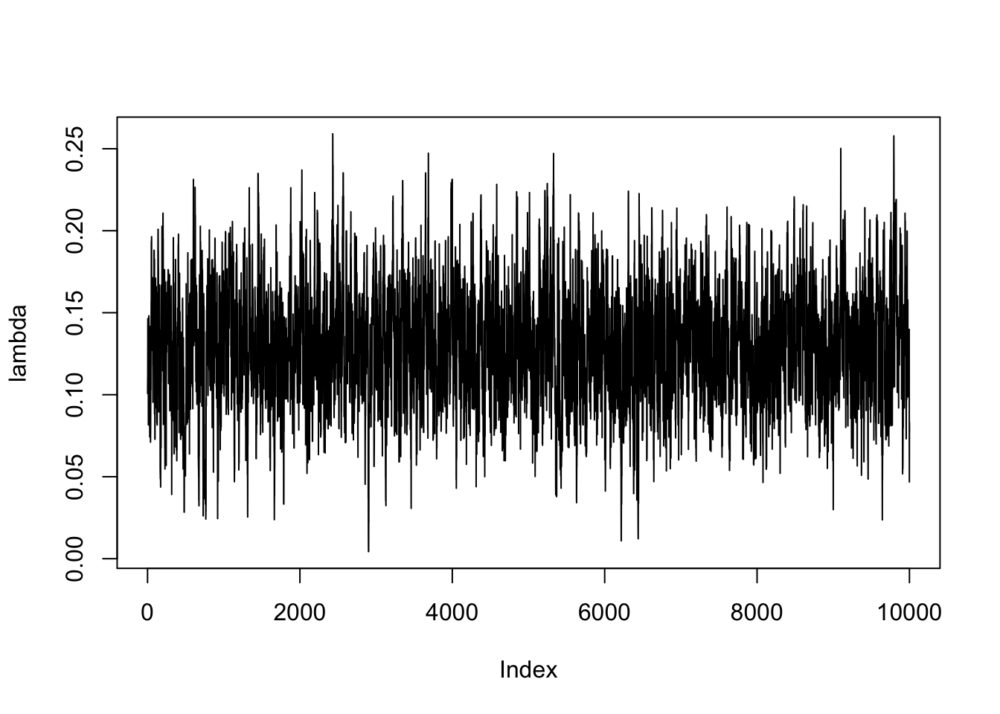

Sign and Zero Restrictions: Optimism Shock on the Australian Business Cycle
Abstract. This article investigates the effects of optimism shocks on the Australian economy using a Bayesian Structural Vector Autoregression (BSVAR) model. We implement the sign and zero restrictions algorithm proposed by Arias, Rubio-Ramı́rez, and Waggoner (2018) to identify the optimism shock. Impulse response functions (IRF) and forecast error variance decomposition (FEVD) are used to analyse the effects of the optimism shock on five key macroeconomic variables: productivity, stock prices, consumption, real interest rate and hours worked.
Keywords. Bayesian Structural VAR, sign restrictions, zero restrictions, optimism shock
Introduction
Objective: The goal of this research project is to implement the sign and zero restrictions algorithm proposed by Arias, Rubio-Ramı́rez, and Waggoner (2018) in the bsvarSIGNs package, and apply it to analyse the optimism shock to Australian economy.
Question: Does optimism shocks drive the business cycles in Australian economy?
Motivation: In macroeconomics, there has been a longstanding belief that fluctuations in business cycles can be largely attributed to episodes of optimism and pessimism. An optimism shock is defined as a positive shock to stock prices that does not affect productivity. Using a penalty function approach (PFA), Beaudry, Nam, and Wang (2011) finds significant evidence that optimism shocks are a key driver of business cycles in the United States as it creates a simultaneous boom in consumption and hours worked. But, Arias, Rubio-Ramı́rez, and Waggoner (2018) argue that PFA imposes additional restrictions, and they find less significant results using an importance sampler algorithm. This research project aims to extend the analysis to the Australian economy by implementing the importance sampler algorithm, and compare the results with United-States data.
Data
All data are collected from the Reserve Bank of Australia (RBA), the Australian Bureau of Statistics (ABS) and Yahoo Finance. The sample period covers 1994 Q3 to 2023 Q4. Following Beaudry, Nam, and Wang (2011), we select the following five variables for our analysis
- Productivity: non-farm labour productivity per hour (source: RBA, series ID GNFPROSQI).
- Stock prices: end-of-period ASX 200 index (source: Yahoo Finance, ticker symbol ^AXJO), divided by the consumer price index.

- Consumption: retail turnover (source: ABS, series ID A3348585R), divided by the consumer price index.

- Real interest rate: over-night cash rate nets inflation (source: RBA, series ID FIRMMCRI and GCPIAGSAQP).

- Hours worked: total hours worked (source: ABS, series ID A85389611R).

The first two variables (productivity and stock prices) are chosen to identify the optimism shock, the last three variables (consumption, real interest rate and hours worked) are chosen to capture the business cycle dynamics as in standard macroeconomic theory.
To capture multiplicative relationships in macroeconomic time series and percentage change interpretation, all variables are log transformed (except for real interest rate). A preview of first 6 rows of the concatenated dataset is shown below.
| date | productivity | stock_prices | consumption | real_interest_rate | hours_worked |
|---|---|---|---|---|---|
| Sep 1994 | 4.2268 | 3.4527 | 4.9278 | 4.842 | 6.0222 |
| Dec 1994 | 4.2356 | 3.3870 | 4.9191 | 5.961 | 6.0143 |
| Mar 1995 | 4.2254 | 3.3764 | 4.9315 | 5.892 | 6.0170 |
| Jun 1995 | 4.2121 | 3.4216 | 4.9487 | 6.209 | 6.0218 |
| Sep 1995 | 4.2297 | 3.4635 | 4.9500 | 6.293 | 6.0199 |
| Dec 1995 | 4.2268 | 3.4968 | 4.9610 | 6.708 | 6.0164 |
ACF and PACF plot

The autocorrelation function (ACF) plot shows all variables have a consistent pattern of autocorrelation, this suggests that the time series are non-stationary. Stationarity is formally tested using the Augmented Dickey-Fuller test in the next section.

The partial autocorrelation function (PACF) plot shows that the partial autocorrelation of all variables is significant at lag 1, real interest rate is also significant at lag 2. Therefore, choosing a lag length for the VAR model greater than or equal to 2 is reasonable, following convention for quarterly data, we will adopt a lag length of 4 for the VAR model.
Augmented Dickey-Fuller test
Level
All five variables are non-stationary at 5% significance level base on the Augmented Dickey-Fuller test.
| variable | p_value | non_stationary |
|---|---|---|
| productivity | 0.8093 | 1 |
| stock_prices | 0.1600 | 1 |
| consumption | 0.6469 | 1 |
| real_interest_rate | 0.3812 | 1 |
| hours_worked | 0.0520 | 1 |
First difference
Applying Augmented Dickey-Fuller test to the first difference of the variables, we find that all variables are stationary at 5% significance level. Therefore, all variables are integrated of order one \(I(1)\) and it is reasonable to put them in a VAR system without further transformation.
| variable | p_value | non_stationary |
|---|---|---|
| productivity | 0.01 | 0 |
| stock_prices | 0.01 | 0 |
| consumption | 0.01 | 0 |
| real_interest_rate | 0.01 | 0 |
| hours_worked | 0.01 | 0 |
Model
Specification
Adopting notations from Rubio-Ramirez, Waggoner, and Zha (2010), the SVAR model is specified as follows.
The endogenous variables are
\[ \mathbf{y}_t = [\text{productivity}_t,\ \text{stock prices}_t,\ \text{consumption}_t,\ \text{real interest rate}_t,\ \text{hours worked}_t]' \]
Structural form
\[ \begin{align*} \mathbf{y}_t' \mathbf{A}_0 &= \sum_{l=1}^{p} \mathbf{y}_{t-l}'\mathbf{A}_l + \mathbf{c} + \boldsymbol{\varepsilon}_t' \\ \boldsymbol{\varepsilon}_t | \mathbf{Y}_{t-1} &\overset{\text{iid}}{\sim} \mathcal{N}_N(\mathbf{0}, \mathbf{I}) \end{align*} \]
where \(\mathbf{y}_t\) is an \(N\times1\) vector of endogenous variables, \(\boldsymbol{\varepsilon}_t\) is an \(N\times1\) vector of exogenous structural shocks, \(\mathbf{A}_l\) is an \(N\times N\) matrix of parameters with \(\mathbf{A}_0\) invertible, \(\mathbf{c}\) is an \(1\times N\) vector of parameters, and \(p\) is the lag length, and \(T\) is the sample size. This can be compactly written as
\[ \begin{align*} \mathbf{y}_t' \mathbf{A}_0 &= \mathbf{x}_t' \mathbf{A}_+ + \boldsymbol{\varepsilon}_t' \end{align*} \]
where \(\mathbf{A}_+ = [\mathbf{A}_1'\ \cdots\ \mathbf{A}_p'\ \hspace{4mm}\mathbf{c}']\) and \(\mathbf{x}_t = [\mathbf{y}_{t-1}'\ \cdots\ \mathbf{y}_{t-p}'\hspace{4mm}\ 1]\). The dimension of \(\mathbf{A}_+\) is \(K\times N\) where \(K=Np+1\).
In matrix form,
\[ \begin{align*} \mathbf{Y} \mathbf{A}_0 &= \mathbf{X} \mathbf{A}_+ + \boldsymbol{\varepsilon}\\ \boldsymbol{\varepsilon}| \mathbf{X} &\sim \mathcal{MN}_{T\times N}(\mathbf{0}, \mathbf{I}_N, \mathbf{I}_T) \end{align*} \]
where \(\mathbf{Y} = [\mathbf{y}_1\ \cdots\ \mathbf{y}_T]'\), \(\mathbf{X} = [\mathbf{x}_1\ \cdots\ \mathbf{x}_T]'\), and \(\boldsymbol{\varepsilon}= [\boldsymbol{\varepsilon}_1\ \cdots\ \boldsymbol{\varepsilon}_T]'\).
The matrices \(\mathbf{A}_0\) and \(\mathbf{A}_+\) are structural parameters.
Reduced form
\[ \begin{align*} \mathbf{y}_t' &= \mathbf{x}_t' \mathbf{B} + \mathbf{u}_t' \\ \mathbf{u}_t | \mathbf{Y}_{t-1} &\overset{\text{iid}}{\sim} \mathcal{N}_N(\mathbf{0}, \mathbf{\Sigma}) \end{align*} \]
where \(\mathbf{B} = \mathbf{A}_ + \mathbf{A}_0^{-1},\ \mathbf{u}_t' = \boldsymbol{\varepsilon}_t' \mathbf{A}_0^{-1}\), and
\[ \mathbf{\Sigma }= \mathbb{E}[\mathbf{u}_t\mathbf{u}_t'] = (\mathbf{A}_0^{-1})' (\mathbf{A}_0^{-1}) = (\mathbf{A}_0 \mathbf{A}_0')^{-1} \]
In matrix form,
\[ \begin{align*} \mathbf{Y} &= \mathbf{X} \mathbf{B} + \mathbf{u} \\ \mathbf{u} | \mathbf{X} &\sim \mathcal{MN}_{T\times n}(\mathbf{0}, \mathbf{\Sigma}, \mathbf{I}_T) \end{align*} \]
where \(\mathbf{u} = [\mathbf{u}_1\ \cdots\ \mathbf{u}_T]'\).
The matrices \(\mathbf{B}\) and \(\mathbf{\Sigma}\) are reduced-form parameters.
Orthogonal reduced-form parameterization
Since SVAR model are identified up to a rotation matrix \(\mathbf{Q}\), we can explicitly specified the reduced-form model as
\[ \mathbf{y}_t' = \mathbf{x}_t' \mathbf{B} + \boldsymbol{\varepsilon}_t' \mathbf{Q}' h(\mathbf{\Sigma}) \]
Where \(\mathbf{Q}'h(\mathbf{\Sigma}) = \mathbf{A}_0^{-1}\) or \(\mathbf{Q}=h(\mathbf{\Sigma}) \mathbf{A}_0\), and \(h\) is some differentiable decomposition, one specific choice is the upper triangular Cholesky decomposition.
Then, we can define a mapping \(f_h\) between the reduced-form parameters \((\mathbf{B}, \mathbf{\Sigma}, \mathbf{Q})\) and structural-form parameters \((\mathbf{A}_0, \mathbf{A}_+)\) as
\[ \begin{align*} f_h(\mathbf{A}_0, \mathbf{A}_+) &= ( \underbrace{\mathbf{A}_+ \mathbf{A}_0^{-1}}_\mathbf{B}, \underbrace{(\mathbf{A}_0 \mathbf{A}_0')^{-1}}_{\mathbf{\Sigma}}, \underbrace{h((\mathbf{A}_0 \mathbf{A}_0')^{-1}) \mathbf{A}_0}_\mathbf{Q} ) \\ f_h^{-1}(\mathbf{B}, \mathbf{\Sigma}, \mathbf{Q}) &= ( \underbrace{h(\mathbf{\Sigma})^{-1} \mathbf{Q}}_{\mathbf{A}_0}, \underbrace{\mathbf{B} h(\mathbf{\Sigma})^{-1} \mathbf{Q}}_{\mathbf{A}_+} ) \end{align*} \]
Algorithm
Reduced form
The first step is to sample the reduced-form parameters (\(\mathbf{B}\), \(\mathbf{\Sigma}\)). Adopting the conjugate Normal-Inverse-Wishart prior,
\[ \begin{align*} \mathbf{B}|\mathbf{\Sigma }&\sim \mathcal{MN}_{K\times N}(\underline{\mathbf{B}}, \underline{\mathbf{V}},\mathbf{\Sigma}) \\ \mathbf{\Sigma }&\sim \mathcal{IW}_N(\underline{\mathbf{S}}, \underline{\nu}) \end{align*} \]
and let
\[ \begin{align*} \hat{\mathbf{B}} &= (\mathbf{X}'\mathbf{X})^{-1}\mathbf{X}'\mathbf{Y} \\ \mathbf{R} &= (\mathbf{Y}-\mathbf{X}\hat{\mathbf{B}})'(\mathbf{Y}-\mathbf{X}\hat{\mathbf{B}}) \end{align*} \]
the conjugate posterior distribution can be derived from
\[\begin{align*} p(\mathbf{B},\mathbf{\Sigma}|\mathbf{Y}) &\propto |\mathbf{\Sigma}|^{-T/2}\exp\left\{ -\frac{1}{2}\text{tr}\left[ \mathbf{\Sigma}^{-1}(\mathbf{Y}-\mathbf{X}\mathbf{B})'(\mathbf{Y}-\mathbf{X}\mathbf{B}) \right] \right\} \\ &\quad\times |\mathbf{\Sigma}|^{-T/2}\exp\left\{ -\frac{1}{2}\text{tr}[\mathbf{\Sigma}^{-1}(\mathbf{B}-\underline{\mathbf{B}})'\underline{\mathbf{V}}^{-1}(\mathbf{B}-\underline{\mathbf{B}})] \right\} \\ &\quad\times |\mathbf{\Sigma}|^{-(\underline\nu+N+1)/2}\exp\left\{ -\frac{1}{2} \text{tr}(\underline{\mathbf{S}}\mathbf{\Sigma}^{-1}) \right\} \\ &\propto |\mathbf{\Sigma}|^{-T/2}\exp\left\{ -\frac{1}{2}\text{tr}\left[ \left( \mathbf{R}+(\mathbf{B}-\hat{\mathbf{B}})'\mathbf{X}'\mathbf{X}(\mathbf{B}-\hat{\mathbf{B}}) \right) \mathbf{\Sigma}^{-1} \right] \right\} \\ &\quad\times |\mathbf{\Sigma}|^{-T/2}\exp\left\{ -\frac{1}{2}\text{tr}[(\mathbf{B}-\underline{\mathbf{B}})'\underline{\mathbf{V}}^{-1}(\mathbf{B}-\underline{\mathbf{B}})\mathbf{\Sigma}^{-1}] \right\} \\ &\quad\times |\mathbf{\Sigma}|^{-(\underline\nu+N+1)/2}\exp\left\{ -\frac{1}{2} \text{tr}(\underline{\mathbf{S}}\mathbf{\Sigma}^{-1}) \right\} \\ &\propto |\mathbf{\Sigma}|^{-T/2}\exp\left\{ -\frac{1}{2} \text{tr}\left[ \left( (\mathbf{B}-\hat{\mathbf{B}})'\mathbf{X}'\mathbf{X}(\mathbf{B}-\hat{\mathbf{B}})+(\mathbf{B}-\underline{\mathbf{B}})'\underline{\mathbf{V}}^{-1}(\mathbf{B}-\underline{\mathbf{B}}) \right) \mathbf{\Sigma}^{-1} \right] \right\} \\ &\quad\times |\mathbf{\Sigma}|^{-(\underline\nu+T+N+1)/2}\exp\left\{ -\frac{1}{2}\text{tr}\left[ (\mathbf{R}+\underline{\mathbf{S}})\mathbf{\Sigma}^{-1} \right] \right\} \\ &=|\mathbf{\Sigma}|^{-T/2}\exp\left\{ -\frac{1}{2} \text{tr}\left[ (\mathbf{B}-\overline{\mathbf{B}})'\overline{\mathbf{V}}^{-1}(\mathbf{B}-\overline{\mathbf{B}}) \mathbf{\Sigma}^{-1} \right] \right\} \\ &\quad\times |\mathbf{\Sigma}|^{-(\underline\nu+T+N+1)/2}\exp\left\{ -\frac{1}{2}\text{tr}\left[ (\mathbf{R}+\underline{\mathbf{S}}+\hat{\mathbf{B}}'\mathbf{X}'\mathbf{X}\hat{\mathbf{B}}+\underline{\mathbf{B}}'\underline{\mathbf{V}}^{-1}\underline{\mathbf{B}}-\overline{\mathbf{B}}'\overline{\mathbf{V}}^{-1}\overline{\mathbf{B}})\mathbf{\Sigma}^{-1} \right] \right\} \\ &=|\mathbf{\Sigma}|^{-T/2}\exp\left\{ -\frac{1}{2} \text{tr}\left[ (\mathbf{B}-\overline{\mathbf{B}})'\overline{\mathbf{V}}^{-1}(\mathbf{B}-\overline{\mathbf{B}}) \mathbf{\Sigma}^{-1} \right] \right\} \\ &\quad\times |\mathbf{\Sigma}|^{-(\underline\nu+T+N+1)/2}\exp\left\{ -\frac{1}{2}\text{tr}\left[ (\mathbf{Y}'\mathbf{Y}+\underline{\mathbf{S}}+\underline{\mathbf{B}}'\underline{\mathbf{V}}^{-1}\underline{\mathbf{B}}-\overline{\mathbf{B}}'\overline{\mathbf{V}}\overline{\mathbf{B}})\mathbf{\Sigma}^{-1} \right] \right\} \\ &=p(\mathbf{B}|\mathbf{\Sigma},\mathbf{Y})\times p(\mathbf{\Sigma}|\mathbf{Y}) \end{align*}\]
Therefore, the posterior distribution of the reduced-form parameters is given by
\[ \begin{align*} \mathbf{B}|\mathbf{\Sigma},\mathbf{Y} &\sim \mathcal{MN}_{K\times N}(\overline{\mathbf{B}}, \overline{\mathbf{V}},\mathbf{\Sigma}) \\ \mathbf{\Sigma}|\mathbf{Y} &\sim \mathcal{IW}_N(\overline{\mathbf{S}}, \overline{\nu}) \end{align*} \]
where
\[ \begin{align*} \overline{\mathbf{B}} &= \overline{\mathbf{V}}(\mathbf{X}'\mathbf{Y}+\underline{\mathbf{V}}^{-1}\underline{\mathbf{B}}) \\ \overline{\mathbf{V}} &= (\mathbf{X}'\mathbf{X}+\underline{\mathbf{V}}^{-1})^{-1} \\ \overline{\mathbf{S}} &= \underline{\mathbf{S}}+\mathbf{Y}'\mathbf{Y}+\underline{\mathbf{B}}'\underline{\mathbf{V}}^{-1}\underline{\mathbf{B}}-\overline{\mathbf{B}}'\overline{\mathbf{V}}^{-1}\overline{\mathbf{B}} \\ \overline{\nu} &= \underline{\nu}+T \end{align*} \]
Structural form
To perform zero and sign restrictions, we need an algorithm to sample from the posterior distribution of the structural parameters (\(\mathbf{A}_0\), \(\mathbf{A}_+\)) conditional on the zero and sign restrictions.
However, the set of structural parameters satisfying the zero restrictions is of Lebesgue measure zero in the set of all structural parameters (akin to \(\mathbb{P}(X=x)=0\) for continuous \(X\)). Luckily, we can sample the set of structural parameters satisfying the sign restrictions conditional on satisfying the zero restrictions.
Here is a high level outline of the algorithm proposed by Arias, Rubio-Ramı́rez, and Waggoner (2018):
- Sample reduced-form parameters \(\mathbf{B},\mathbf{\Sigma}\sim \mathcal{NIW}(\overline{\mathbf{B}},\overline{\mathbf{V}},\overline{\mathbf{S}},\overline{\mathbf{\nu}})\).
- Sample \(\mathbf{Q}\) conditional on the zero restrictions and set \((\mathbf{A}_0, \mathbf{A}_+) = f_h^{-1}(\mathbf{B}, \mathbf{\Sigma}, \mathbf{Q})\).
- If the sign restrictions are satisfied, keep \((\mathbf{A}_0, \mathbf{A}_+)\) and compute an importance weight, otherwise discard.
- Repeat steps 1-3 until the desired number of samples is obtained.
- Resample with replacement using the importance weights.
Where step 5 (importance sampling) is needed to manipulate the density induced by step 1 to the desired Nomral-Generalized-Normal posterior density \(\mathcal{NGN}\).
To be explicit, starting with a Uniform-Normal-Inverse-Wishart prior distribution, the importance weight in step 3 is given by (posterior condition on \(\mathbf{Y}\) is dropped for brevity):
\[ \begin{align*} \frac{\mathcal{NGN}(\mathbf{A}_0,\mathbf{A}_+|\mathcal Z, \mathcal S)}{\mathcal{UNIW}(\mathbf{B},\mathbf{\Sigma},\mathbf{Q})v_{(g\circ f_h)|\mathcal Z}(\mathbf{A}_0,\mathbf{A}_+)} &=\frac{\mathcal{UNIW}(\mathbf{B},\mathbf{\Sigma},\mathbf{Q}|\mathcal Z, \mathcal S)v_{f_h}(\mathbf{A}_0,\mathbf{A}_+)}{\mathcal{UNIW}(\mathbf{B},\mathbf{\Sigma},\mathbf{Q})v_{(g\circ f_h)|\mathcal Z}(\mathbf{A}_0,\mathbf{A}_+)}\\ &\propto\frac{|\text{det}(\mathbf{A}_0)|^{-(2N+K+1)}}{v_{(g\circ f_h)|\mathcal Z}(\mathbf{A}_0,\mathbf{A}_+)} \end{align*} \]
where \(\mathcal Z\) denotes zero restrictions and \(\mathcal S\) denotes sign restrictions. The numerator is the target density, and the denominator is the proposal density from steps 1-2.
Implementations
For computational efficiency, main functions in the bsvarSIGNs package are written in C++. The first function is compute posterior parameters as derived above.
Rcpp::List niw_cpp(
const arma::mat& Y,
const arma::mat& X,
const Rcpp::List prior
) {
const int T = Y.n_rows;
mat prior_B = as<mat>(prior["B"]);
mat prior_V = as<mat>(prior["V"]);
mat prior_S = as<mat>(prior["S"]);
int prior_nu = as<int>(prior["nu"]);
// analytic solutions
mat prior_V_inv = inv_sympd(prior_V);
mat post_V_inv = prior_V_inv + X.t() * X;
mat post_V = inv_sympd(post_V_inv);
mat post_B = post_V * (X.t() * Y + prior_V_inv * prior_B);
// marginal posterior of Sigma
mat post_S = prior_S + Y.t() * Y + prior_B.t() * prior_V_inv * prior_B - post_B.t() * post_V_inv * post_B;
post_S = symmatu(post_S);
int post_nu = prior_nu + T;
return List::create(
Named("B") = post_B,
Named("V") = post_V,
Named("S") = post_S,
Named("nu") = post_nu
);
}The second function is to draw from the matrix normal distribution.
arma::mat rmatnorm_cpp(
const arma::mat& M,
const arma::mat& U,
const arma::mat& V
) {
mat X = mat(size(M), fill::randn);
return M + chol(U).t() * X * chol(V);
}To draw from the inverse Wishart distribution, we use the iwishrnd function from the RcppArmadillo package. Using these three functions together, we are able to estimate the reduced-form BVAR model.
The following code calculates the volume element \(v_{(g\circ f_h)|\mathcal Z}\) in the resampling step for the structural parameters
double log_volume_element(
const arma::field<arma::mat>& Z, //Field of matrices representing narrative restrictions
const arma::mat& A0,
const arma::mat& Aplus
) {
colvec vec_structural = join_vert(vectorise(A0), vectorise(Aplus));
// Compute the derivative of the narrative restrictions wrt the structural parameters
mat Dz = Df([Z](const colvec& x) { return zero_restrictions(Z, x); }, vec_structural);
// Compute derivative of combined mapping function g_fh_vec wrt the structural parameters
mat Dgf = Df([Z](const colvec& x) { return g_fh_vec(Z, x); }, vec_structural);
// Compute the null space of the derivative of the narrative restrictions
mat DN = Dgf * null(Dz);
// Logarithm of determinant, then take the real part
return 0.5 * log_det(DN.t() * DN).real();
}Comparison with PFA
The PFA uses a loss function to find a rotation matrix \(\mathbf{Q}\) that satisfies the zero restrictions and satisfies or close to satisfying the sign restrictions, thus it is not an exact solution. In comparison, the importance sampler algorithm is an exact solution satisfying all the restrictions.
Mathematically, the PFA solves the following minimization problem:
\[ \begin{aligned} q^* &= {\arg\min}_q \Psi(q) \quad s.t. (1)\ q'q=1,\ (2)\ R_{zero}q=0 \end{aligned} \]
where \(q\) is a column of \(\mathbf{Q}\). This step is analogous to steps 2-3 of the importance sampler algorithm. Intuitively, by minimizing \(\Psi(q)\) we can find something close to satisfying the sign restrictions, condition (1) makes sure \(\mathbf{Q}\) is orthogonal and condition (2) makes sure \(\mathbf{Q}\) satisfies the zero restrictions.
Detailed definitions of \(\Psi\) and \(R_{zero}\) is beyond the scope of this project, but it is evident that the minimization problem gives an unique solution and therefore the PFA is not set-identifying \(\mathbf{Q}\).
Extension
Besides the zero and sign restrictions, another popular identification scheme proposed by Antolı́n-Dı́az and Rubio-Ramı́rez (2018) is to impose narrative restrictions on the structural shocks and historical decomposition. For example, restricting a structural shock to be negative during some period, and we will apply this to restrict the optimism shock during the Covid-19 pandemic.
But, the difficulty is that the narrative restrictions \(\mathcal{R}\) requires another resample with some importance weight:
\[ \frac{1}{\omega(\mathbf{B},\mathbf{\Sigma},\mathbf{Q})} \propto \frac{\mathcal{UNIW}(\mathbf{B},\mathbf{\Sigma},\mathbf{Q}|\mathcal S, \mathcal R)}{\mathcal{UNIW}(\mathbf{B},\mathbf{\Sigma},\mathbf{Q})} \]
To combine these two identifications, we need to calculate the importance weight when all of the three restrictions, zero, sign, and narrative, are present. Intuitively, it is the product of the importance weight for the narrative restrictions and the importance weight for the zero and sign restrictions.
Here is an preliminary proof. The insight is to notice that \(\frac{\mathcal{UNIW}(\mathbf{B},\mathbf{\Sigma},\mathbf{Q}|\mathcal Z, \mathcal S, \mathcal R)}{\mathcal{UNIW}(\mathbf{B},\mathbf{\Sigma},\mathbf{Q}|\mathcal S, \mathcal R)}\propto 1\) since adding zero restrictions does not change the likelihood and only truncates uniform conditional prior \(\pi(\mathbf{Q}|\mathbf{B},\mathbf{\Sigma})\).
\[ \begin{align*} \frac{\mathcal{NGN}(\mathbf{A}_0,\mathbf{A}_+|\mathcal Z, \mathcal S, \mathcal R)}{\mathcal{UNIW}(\mathbf{B},\mathbf{\Sigma},\mathbf{Q})v_{(g\circ f_h)|\mathcal Z}(\mathbf{A}_0,\mathbf{A}_+)} =&\frac{\mathcal{UNIW}(\mathbf{B},\mathbf{\Sigma},\mathbf{Q}|\mathcal Z, \mathcal S, \mathcal R)v_{f_h}(\mathbf{A}_0,\mathbf{A}_+)}{\mathcal{UNIW}(\mathbf{B},\mathbf{\Sigma},\mathbf{Q})v_{(g\circ f_h)|\mathcal Z}(\mathbf{A}_0,\mathbf{A}_+)}\\ =&\frac{\mathcal{UNIW}(\mathbf{B},\mathbf{\Sigma},\mathbf{Q}|\mathcal S, \mathcal R)}{\mathcal{UNIW}(\mathbf{B},\mathbf{\Sigma},\mathbf{Q})} \frac{\mathcal{UNIW}(\mathbf{B},\mathbf{\Sigma},\mathbf{Q}|\mathcal Z, \mathcal S, \mathcal R)}{\mathcal{UNIW}(\mathbf{B},\mathbf{\Sigma},\mathbf{Q}|\mathcal S, \mathcal R)}\\ &\times \frac{v_{f_h}(\mathbf{A}_0,\mathbf{A}_+)}{v_{(g\circ f_h)|\mathcal Z}(\mathbf{A}_0,\mathbf{A}_+)}\\ \propto&\frac{1}{\omega(\mathbf{B},\mathbf{\Sigma},\mathbf{Q})}\frac{v_{f_h}(\mathbf{A}_0,\mathbf{A}_+)}{v_{(g\circ f_h)|\mathcal Z}(\mathbf{A}_0,\mathbf{A}_+)}\\ \propto&\frac{1}{\omega(\mathbf{B},\mathbf{\Sigma},\mathbf{Q})}\frac{|\text{det}(\mathbf{A}_0)|^{-(2N+K+1)}}{v_{(g\circ f_h)|\mathcal Z}(\mathbf{A}_0,\mathbf{A}_+)} \end{align*} \]
The following code calculates \(\omega(\mathbf{B},\mathbf{\Sigma},\mathbf{Q})\) for the narrative restrictions
double weight_narrative(
const int& T,
arma::mat sign_narrative,
const arma::cube& irf
) {
const int M = 1e+04; // number of draws to approximate normal distribution
double n_success = 1.0e-15;
cube Z(irf.n_rows, sign_narrative.col(5).max() + 1, M, fill::randn);
// change all starting period to the first period
// since we use the same M draws for all narrative restrictions
sign_narrative.col(4) = ones(sign_narrative.n_rows, 1);
for (int m=0; m<M; m++) {
if (match_sign_narrative(Z.slice(m), sign_narrative, irf)) {
n_success++;
}
}
return M / n_success;
}Arias, Rubio-Ramı́rez, and Waggoner (2018) provides a sufficient condition for the partial identification of the first \(k\) shocks: at least \(N-j\) zero restrictions and at least 1 sign restriction on the IRFs to the \(j\)-th shock for \(1\le j\le k\). At this stage, there is no theoretical result how to incorporate narrative restrictions in this sufficient condition. Generally, narrative restrictions are used to sharpen the inference (i.e. narrower highest density interval) and does not make the structural shocks exactly identified.
If given some narrative restrictions there is an uniquely identified \(\mathbf{Q}^*\), step 3 of the importance sampling algorithm would never work, since the probability a randomly sampled \(\mathbf{Q}=\mathbf{Q}^*\) is \(0\). In the later empirical work, we show the algorithm can still work with narrative restrictions, therefore at least the narrative restrictions considered here are not binding. But, the advantage of narrative (and sign) restrictions is that they are less controversial and the result can be agreed upon by more researchers.
Simulation
Reduced form
To test the validity of our code, we simulate 1,000 observations from a bi-variate Gaussian random walk process with the covariance matrix equal to the identity matrix of order 2.
Then, we compute 1,000 posterior draws from a SVAR model with a constant term and one lag, using the default identification scheme: positive sign restrictions on the diagonal of \(\mathbf{A}_0\).
The posterior mean of the \(\mathbf{B}\) is
| y1 | y2 | |
|---|---|---|
| y1_lag | 0.9885 | 0.0052 |
| y2_lag | 0.0027 | 0.9954 |
| constant | 0.0589 | 0.0822 |
The posterior mean of \(\mathbf{\Sigma}\) is
| y1 | y2 | |
|---|---|---|
| y1 | 0.9760 | 0.0881 |
| y2 | 0.0881 | 1.0146 |
They are close to the true values of the simulated data.
Structural form
Suppose the true structural model is
\[ \begin{bmatrix} -1 & 1\\ 1 & 0\\ \end{bmatrix} \begin{bmatrix} y_{1,t}\\ y_{2,t}\\ \end{bmatrix} = \begin{bmatrix} -1 & 1\\ 1 & 0\\ \end{bmatrix} \begin{bmatrix} y_{1,t-1}\\ y_{2,t-1}\\ \end{bmatrix} + \begin{bmatrix} \varepsilon_{1,t}\\ \varepsilon_{2,t}\\ \end{bmatrix}, \begin{bmatrix} \varepsilon_{1,t}\\ \varepsilon_{2,t}\\ \end{bmatrix} \sim \mathcal{N}( \begin{bmatrix} 0 \\ 0 \end{bmatrix} , \begin{bmatrix} 1 & 0 \\ 0 & 1 \\ \end{bmatrix} ) \]
equivalently, we can simulate 1,000 observations from the reduced-form
\[ \begin{bmatrix} y_{1,t}\\ y_{2,t}\\ \end{bmatrix} = \begin{bmatrix} 1 & 0\\ 0 & 1\\ \end{bmatrix} \begin{bmatrix} y_{1,t-1}\\ y_{2,t-1}\\ \end{bmatrix} + \begin{bmatrix} u_{1,t}\\ u_{2,t}\\ \end{bmatrix}, \begin{bmatrix} u_{1,t}\\ u_{2,t}\\ \end{bmatrix} \sim \mathcal{N}( \begin{bmatrix} 0 \\ 0 \end{bmatrix} , \begin{bmatrix} 1 & 1 \\ 1 & 2 \\ \end{bmatrix} ) \]
Putting zero and sign restrictions on the inverse of the structural matrix
\[ \begin{bmatrix} -1 & 1\\ 1 & 0\\ \end{bmatrix}^{-1} = \begin{bmatrix} 0 & 1\\ 1 & 1\\ \end{bmatrix} \Rightarrow \begin{bmatrix} 0 & +\\ + & +\\ \end{bmatrix} \]
Posterior mean of 1,000 draws of the structural matrix is
[,1] [,2]
[1,] -0.9614 1.0448
[2,] 0.9614 0.0000Identification
The following restrictions are imposed on the contemporaneous impulse response to identify the optimism shock.
| Productivity | Stock prices | Consumption | Real interest rate | Hours worked |
|---|---|---|---|---|
| 0 | Positive | Unrestricted | Unrestricted | Unrestricted |
The identification strategy is based on the assumption that the optimism shock positively affects stock prices, and has no contemporaneous effect on productivity.
Interpretation
Two popular methods to interpret the SVAR model are impulse response function (IRF) and forecast error variance decomposition (FEVD) (Kilian and Lütkepohl 2017, Chap 4).
IRF
The impulse response function (IRF) of the SVAR model is used to interpret the effect of the optimism shock on the endogenous variables. Specifically, we are interested in whether a positive optimism shock leads to a simultaneous boom in consumption and hours worked (as in the United States).
Mathematically, the response of the \(i\)-th variable to the \(j\)-th shock at horizon \(k\) is given by the element at row \(i\) columns \(j\) of \(\mathbf{\Theta}_k\), where \(\mathbf{\Theta}_k\) is defined recursively as
\[\begin{aligned}&\mathbf{\Theta}_{0} = \left(\mathbf{A}_{0}^{-1}\right)^{\prime},\quad\mathbf{\Theta}_{h} = \sum_{l=1}^{h}\bigl(\mathbf{A}_{\ell}\mathbf{A}_{0}^{-1}\bigr)^{\prime}\mathbf{\Theta}_{h-\ell},\quad\mathrm{} 1 \leq h \leq p,\\&\mathbf{\Theta}_{h} = \sum_{\ell=1}^{p}\bigl(\mathbf{A}_{\ell}\mathbf{A}_{0}^{-1}\bigr)^{\prime}\mathbf{\Theta}_{h-\ell},\quad\mathrm{} p < h < \infty.\end{aligned}\]FEVD
The forecast error variance decomposition (FEVD) is used to quantify the relative importance of the optimism shock in explaining the variability of a \(h\)-step ahead forecast of a particular variable. For example, we will examine the proportion of the variability of consumption and hours worked explained by the optimism shock.
Mathematically, the \(i\)-th variable’s forecast error variance decomposition of the \(j\)-th shock at horizon \(h\) is given by
\[ \text{FEVD}_j^i(h) = \frac{\text{MSFE}_{j}^{i}(h)}{\sum_{n=1}^{N}\text{MSFE}_{j}^{n}(h)}, \quad \text{MSFE}_{j}^{i}(h) = \sum_{l=0}^{h-1} \mathbf{\Theta}_{ij,l}^{2} \]
Results
United States
First, we apply the package to the data from the United States, and replicate the results in Arias, Rubio-Ramı́rez, and Waggoner (2018).
History
Historical values of the optimism shock is
Most of the historical values of the optimism shock are not significantly different from 0, perhaps putting only one zero and one sign restriction is not enough to identify the optimism shock.
IRF
The impulse response functions are

which is very close to the ones in the original paper. Although consumption and hours worked have a boom in the median IRF, they are not significantly different from 0. Therefore, base on this identification strategy, the optimism shock does not drive business cycles in the US.
FEVD
Share of FEVD attributed to the optimism shock at horizon 40 (median 50%) and its 68% highest probability interval (16% and 84%) are
| 16% | 50% | 84% | |
|---|---|---|---|
| productivity | 2.02 | 7.77 | 21.11 |
| stock_prices | 7.26 | 30.52 | 62.12 |
| consumption | 2.72 | 17.17 | 52.31 |
| real_interest_rate | 6.39 | 17.21 | 38.98 |
| hours_worked | 4.33 | 17.88 | 48.92 |
which is very close to the ones in the original paper. As the median values are relatively small (<20%), the optimism shock does not contribute significantly to the FEVD of consumption and hours worked in the US.
Australia
All subsequent analysis are performed on the Australian data.
History
Historical values of the optimism shock is

Where the vertical dashed line indicates the period 2020 Q1. Although we have not impose any restriction here, the optimism shock is still significantly negative in 2020 Q1 i.e. the 68% highest density interval does not include zero, this is likely due to the Covid-19 pandemic.
IRF
The impulse response functions are

Comparing to the US, the optimism shock has a much smaller effect on consumption and hours worked in Australia, only stock prices has a significant effect in the short run, other variables all have wide and symmetric IRFs around zero. Therefore, base on the same identification strategy, we conclude the optimism shock does not drive business cycles in Australia as well.
FEVD
Share of FEVD attributed to the optimism shock at horizon 40 (median 50%) and its 68% highest probability interval (16% and 84%) are
| 16% | 50% | 84% | |
|---|---|---|---|
| productivity | 1.33 | 7.30 | 25.56 |
| stock_prices | 3.63 | 13.17 | 34.95 |
| consumption | 2.84 | 9.23 | 23.12 |
| real_interest_rate | 10.48 | 27.09 | 47.85 |
| hours_worked | 4.11 | 11.54 | 26.33 |
As the median values are relatively small (<20%), the optimism shock does not contribute significantly to the FEVD of consumption and hours worked in Australia, which is a second evidence that the optimism shock does not drive business cycles in Australia.
Extension 1: narrative restriction
Now we introduce an additional narrative restriction that
the optimism shock is negative when Covid-19 hits Australia in 2020 Q1.
Since no one see the pandemic coming, and when it happens most people feel pessimistic due to many reasons. For example, being locked down in the house, losing jobs, and feeling uncertain about the future. An Australian national survey conducted in April 2020 (Fisher et al. 2020) finds 27.6% of people have clinically significant symptoms of depression, and 59.2% reported being more irritable. Therefore, it is reasonable to assume that the optimism shock is negative when Covid-19 hits Australia.
History
Historical values of the optimism shock is

Where the vertical dashed line indicates the period 2020 Q1. Now all draws of the optimism shock are negative in 2020 Q1 due to the explicit narrative restriction, if we expand the highest density interval to 100% the interval will still not include zero. Comparing with the historical values of the optimism shock without the narrative restriction, here the highest density intervals are narrower but their overall shape are similar.
One interesting observation is that we see another two standard deviation pessimism shock around 2008, we did not impose any explicit narrative restriction here, but the model is likely picking up the effect of the global financial crisis.
IRF
The impulse response functions are

Although the median IRFs are slightly different from the previous case, the difference is not significant. After imposing the additional narrative restriction, the optimism shock still has no significant impact of the IRFs. Therefore, the conclusion that optimism shock does not drive business cycles in Australia is robust to the narrative restriction on Covid-19.
FEVD
Share of FEVD attributed to the optimism shock at horizon 40 (10 years) are
| 16% | 50% | 84% | |
|---|---|---|---|
| productivity | 1.56 | 6.89 | 24.56 |
| stock_prices | 4.63 | 15.41 | 39.38 |
| consumption | 2.70 | 8.90 | 22.12 |
| real_interest_rate | 10.38 | 27.54 | 49.22 |
| hours_worked | 4.13 | 12.16 | 24.86 |
As the median values are relatively small (<20%), the optimism shock does not contribute significantly to the FEVD of consumption and hours worked in Australia. This is similar the the previous case without the narrative restriction on Covid-19, and is another evidence that the optimism shock does not drive business cycles in Australia.
Extension 2: hierachical prior \(\lambda\)
Previous results have been implicitly relied on the choice of the hyperparameter \(\lambda\) in the Minnesota prior:
\[ \underline{\mathbf{V}} = \text{diag}\left[\lambda^2 * \text{rep}(1,p)\otimes\psi \quad 10^6 \right] \]
where we set \(\lambda = 0.2\) and \(\psi\) as the residual variances from independent AR(1) models. Now we impose a Gamma hierachical prior on \(\lambda\) such that it peaks at around 0.2, specifically with scale and shape parameters:
\[ \lambda \sim \Gamma\left(\frac{9 + \sqrt{17}}{8}, \frac{8}{5(1 + \sqrt{17})}\right) \]
Giannone, Lenza, and Primiceri (2015) proposed a Metropolis algorithm to sample a vector of hyperparameters \(\gamma=(\mu,\delta,\lambda,\psi)\) where \(\mu\) and \(\delta\) are for dummy observation priors that will not be discussed here. A simplified version of their algorithm to sample \(\lambda\) is as follows:
- Initialize \(\lambda\) by maximizing its log posterior, store the numerical Hessian matrix (scalar) \(W\).
- Sample \(\lambda^*\sim\mathcal{N}(\lambda^{(s-1)},W)\).
- Accept \(\lambda^{(s)}=\lambda^*\) with probability \(\alpha = \min\left\{ 1, \frac{p(\lambda^*|\mathbf{Y})}{p(\lambda^{(s-1)}|\mathbf{Y})} \right\}\).
Given the resulting sample \(\left\{ \lambda^{(s)} \right\}\), we can then proceed to sample \(\mathbf{B},\mathbf{\Sigma},\mathbf{Q}\) by first taking a uniform draw from \(\left\{ \lambda^{(s)} \right\}\).
The following R code implements the above algorithm.
niw_prior = function(Y,
p,
non_stationary,
lambda = 0.2) {
T = nrow(Y)
N = ncol(Y)
K = 1 + N * p
B = matrix(0, K, N)
B[1:N, 1:N] = diag(non_stationary)
sigma2 = sapply(1:N, \(i) summary(lm(Y[2:T, i] ~ Y[1:(T - 1), i]))$sigma^2)
V = matrix(0, K, K)
V[K, K] = 1e+6
V[1:(K - 1), 1:(K - 1)] = diag(lambda^2 * kronecker((1:p)^-2, sigma2^-1))
S = diag(sigma2)
nu = N + 2
list(B = B, V = V, S = S, nu = nu)
}
log_det = function(A) {
determinant(A, logarithm = TRUE)$modulus
}
dlambda = function(lambda, p, Y, X) {
N = ncol(Y)
T = nrow(Y)
prior = niw_prior(Y, p, rep(1, N), lambda)
b = prior$B
Omega = prior$V
Psi = prior$S
d = prior$nu
inv_Omega = solve(Omega)
Bhat = solve(t(X) %*% X + inv_Omega) %*% (t(X) %*% Y + inv_Omega %*% b)
ehat = Y - X %*% Bhat
lprior = dgamma(
lambda,
shape = (9 + sqrt(17)) / 8,
scale = 8 / (5 * (1 + sqrt(17))),
log = TRUE
)
llike = -N / 2 * log_det(Omega)
llike = llike - N / 2 * log_det(t(X) %*% X + inv_Omega)
A = Psi + t(ehat) %*% ehat + t(Bhat - b) %*% inv_Omega %*% (Bhat - b)
llike = llike - (T + d) / 2 * log_det(A)
return(lprior + llike)
}
sample_lambda = function(S, p, Y, X) {
init = 0.2
result = optim(
init,
\(lambda) {
nlogp = -dlambda(lambda, p, Y, X)
if (!is.finite(nlogp)) {
nlogp = 1e+6
}
return(nlogp)
},
method = "L-BFGS-B",
lower = init / 100,
upper = init * 100,
hessian = TRUE,
# control = list(trace = 1, maxit = 1e4)
)
lambda = numeric(S)
lambda[1] = result$par
dlambda = result$value
c = 1
W = c * 1 / result$hessian
for (s in 2:S) {
new_lambda = rnorm(1, lambda[s - 1], sqrt(W))
new_dlambda = dlambda(new_lambda, p, Y, X)
if (runif(1) < exp(new_dlambda - dlambda)) {
lambda[s] = new_lambda
dlambda = new_dlambda
} else {
lambda[s] = lambda[s - 1]
}
}
return(lambda)
}Convergence diagnostics
We sample 12,000 draws of \(\lambda\) and discard the first 2,000 draws as burn-in. From the trace plot, we can see that the chain has converged to a stationary distribution.

From the histogram, we can see that the posterior distribution of \(\lambda\) is centered around to 0.13, which shows the default choice of 0.2 is reasonable. On the other hand, since 0.13 is smaller than 0.2, the hirechical prior suggests more shrinkage than the default choice.
IRF
The impulse response functions are
For simplicity, we only report the IRF in this extension. As the IRF is very similar to the previous results, our interpretation remains the same. By imposing the hierarchical prior on \(\lambda\), we let the data to choose the level of shrinkage and this shows the conclusion is robust to a more flexible prior.
Conclusion
In this report, we implement the sign and zero restrictions algorithm from Arias, Rubio-Ramı́rez, and Waggoner (2018), extend it with narrative restrictions from Antolı́n-Dı́az and Rubio-Ramı́rez (2018) and hierarchical priors from Giannone, Lenza, and Primiceri (2015). We replicate the result in the original paper using the US data, then apply the algorithm to the Australian data and found that the conclusion of optimism shock does not drive business cycles holds in the Australian economy. Furthermore, the conclusion is robust to (1) a narrative restriction on pessimism shock during the Covid-19 pandemic and (2) imposing a hierarchical prior on the shrinkage parameter \(\lambda\).
References
Antolı́n-Dı́az, Juan, and Juan F Rubio-Ramı́rez. 2018. “Narrative Sign Restrictions for SVARs.” American Economic Review 108 (10): 2802–29.
Arias, Jonas E, Juan F Rubio-Ramı́rez, and Daniel F Waggoner. 2018. “Inference Based on Structural Vector Autoregressions Identified with Sign and Zero Restrictions: Theory and Applications.” Econometrica 86 (2): 685–720.
Beaudry, Paul, Deokwoo Nam, and Jian Wang. 2011. “Do Mood Swings Drive Business Cycles and Is It Rational?” National Bureau of Economic Research.
Fisher, Jane RW, Thach D Tran, Karin Hammarberg, Jayagowri Sastry, Hau Nguyen, Heather Rowe, Sally Popplestone, Ruby Stocker, Claire Stubber, and Maggie Kirkman. 2020. “Mental Health of People in Australia in the First Month of COVID-19 Restrictions: A National Survey.” Medical Journal of Australia 213 (10): 458–64.
Giannone, Domenico, Michele Lenza, and Giorgio E Primiceri. 2015. “Prior Selection for Vector Autoregressions.” Review of Economics and Statistics 97 (2): 436–51.
Kilian, Lutz, and Helmut Lütkepohl. 2017. Structural Vector Autoregressive Analysis. Cambridge University Press.
Rubio-Ramirez, Juan F, Daniel F Waggoner, and Tao Zha. 2010. “Structural Vector Autoregressions: Theory of Identification and Algorithms for Inference.” The Review of Economic Studies 77 (2): 665–96.